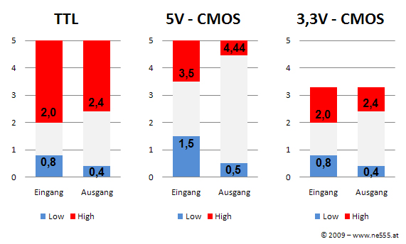
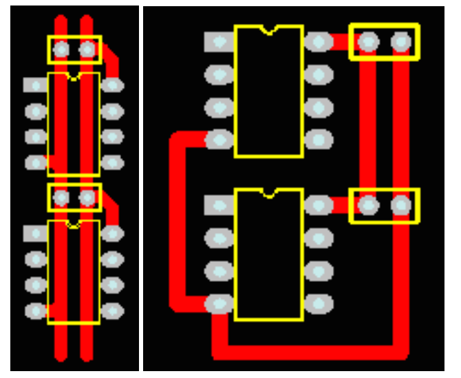
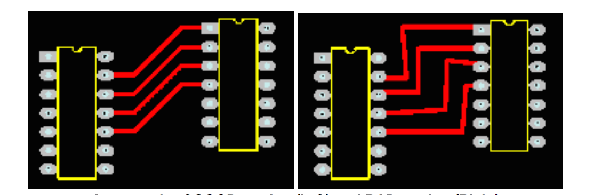

Electronique - DIY
Trucs et astuces
Ekito - 3 Mars 2015
Grégory Estrade - @Torlus sur Twitter, GitHub.
Au programme
- Electronique vs Informatique.
- Lecture de datasheet.
- Interconnexion d'éléments logiques.
- PCB: placement, routage.
- L'oscilloscope, le debugger de l'électronicien.
Electronique vs Informatique
- Vertus: humilité, patience, rigueur.
- On lit les documentations avant.
- Si ça peut échouer, ça le fera.
- Principe de non-isolation.
Lecture de datasheet
- Functional description, block diagram.
- Ordering information.
- Application notes, circuits.
- Absolute maximum ratings.
- DC characteristics.
- AC characteristics.
Interconnexion d'éléments logiques
Logic standards

Conversion 5V / 3.3V
- Direction? Nature des signaux?
- Fréquence maximale?
Placement - Routage


Autres astuces
- Etudier des PCB existants.
- Placement. Découplage.
- Vias. Bus.
Oscilloscope
Travaux pratiques